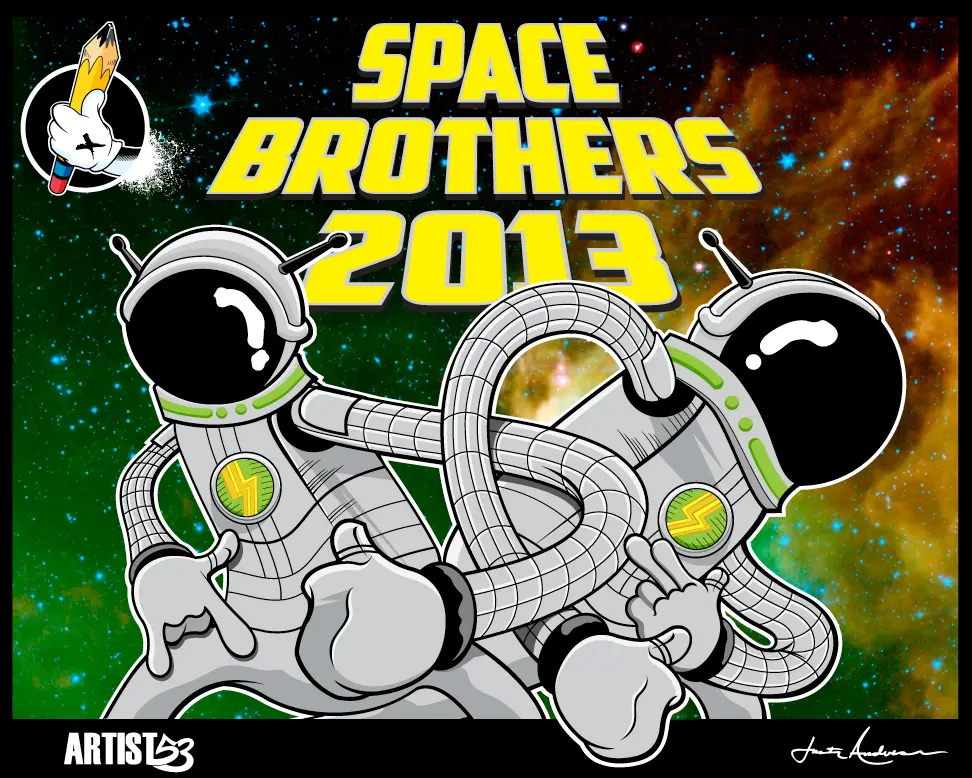
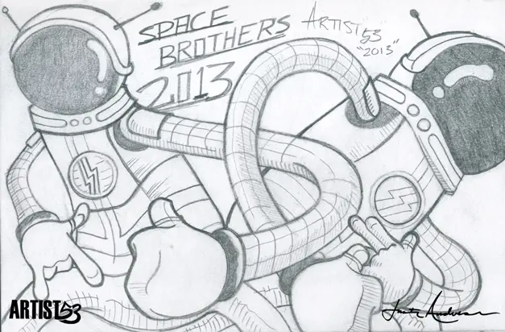

Original Character Illustration
Space Brothers
Two mysterious astronauts connected by one impossible, looping life-support system. Space Brothers was developed from an original pencil concept into a finished cosmic illustration.
Back To Characters
From Pencil To Final
The Original Concept
The core pose, silhouettes and intertwined tubing were established in the sketch before the characters were refined, colored and placed against the space background.
